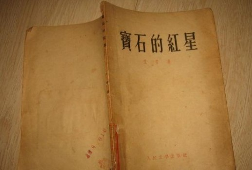
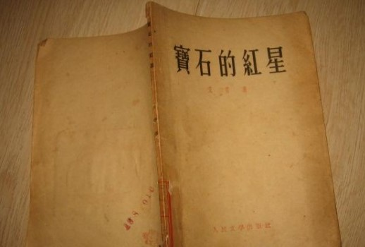

1910年3月
生于浙江省金华市金东区畈田蒋村。
1917年9月
就读金师附小。
1928年6月
考入国立杭州西湖艺术院。
1928年
到巴黎勤工俭学，学习绘画，接触欧洲现代派诗歌。
1932年
1932年，上海加入中国左翼美术家联盟，不久被捕，在狱中写了《大堰河——我的保姆》等诗歌。
1933年
出版诗集《北风》（陕西潼关）《大堰河》《火把》（广西桂林）《黎明的通知》（
黄土高原）《欢呼集》《宝石的红星》（苏联）《春天》等。


1935年
出版了第一本诗集《大堰河》。任《文艺阵地》编委、育才学校文学系主任等。
1941年
任《诗刊》主编。出版了《北方》、《向太阳》、《旷野》、《火把》、《黎明的通知》、《雷地钻》等诗集。
1948年
发表了《在浪尖上》、《光的赞歌》、《古罗马的竞技场》、《艾青选集》等。论文集《诗论》《论诗》《新诗论》等。
1979年
任中国作家协会副主席、国际笔会中心副会长等职。创作有诗集《彩色的诗》《域外集》，出版了《艾青叙事诗选》、《艾青抒情诗选》、《艾青诗选》和《艾青全集》等。
1985年
获法国文学艺术最高勋章。
1996年5月5日
因病逝世，享年86岁。
生平概况一览
艾青（1910-1996）原名蒋海澄，浙江金华人，艾青是他1933年发表《大堰河――我的保姆》时开始使用的笔名。艾青出身于地主家庭，但因为刚出生就有术士说他命克父母，以致引起了父母的厌烦，将其送到一个贫苦农妇家里寄养，这位农妇即"大叶荷"。这使他从小就同情农民，并感染了农民的淳朴和忧郁，和父母的感情非常淡漠。5岁时艾青回到家中。
艾青1928年考入杭州国立西湖艺术专科学校绘画系，1929年去法国勤工俭学，专攻绘画，同时也广泛接触了哲学、文学、特别是诗歌，过了三年"精神上自由，物质上贫困"的生活。置身在淫荡、疯狂、怪异、陌生的资本主义文明世界中，过着半流浪式的生活，咀嚼着异国游子的内心孤寂，使艾青和西方现代象征派、印象派诗歌产生了强烈的共鸣，并由此形成了艾青早期作品中"流浪汉的漂泊的情愫"。
1932年，艾青回国，参加了"中国左翼艺术家联盟"，从事进步爱国活动，并于同年7月，以"颠覆政府"的罪名被捕入狱，饱受三年铁窗之苦。1933年，在狱中，艾青第一次以此为笔名创作了著名长诗《大堰河－我的保姆》，表达了对中国广大农民遭际的同情和关切，从而一举成名，誉满诗坛，引起了社会和文学界的普遍重视。1935年艾青出狱，1936年，汇集他早期创作的诗集《大堰河》出版，并产生了巨大反响。
抗战爆发后，艾青辗转在武汉、山西、湖南、广西等地，1941年从重庆转赴延安。在此期间，创作了大量优秀诗作，著名的有诗集《北方》、《旷野》、《他死在第二次》，和长诗《向太阳》《火把》等，抗日战争时期，可称为"向太阳"时期，也是艾青创作生活的高潮阶段。诗集《北方》和长诗《向太阳》，堪称是用现代技巧表现时代生活主题的典范性艺术试验。
艾青1928年考入杭州国立西湖艺术专科学校绘画系，1929年去法国勤工俭学，专攻绘画，同时也广泛接触了哲学、文学、特别是诗歌，过了三年"精神上自由，物质上贫困"的生活。置身在淫荡、疯狂、怪异、陌生的资本主义文明世界中，过着半流浪式的生活，咀嚼着异国游子的内心孤寂，使艾青和西方现代象征派、印象派诗歌产生了强烈的共鸣，并由此形成了艾青早期作品中"流浪汉的漂泊的情愫"。
1932年，艾青回国，参加了"中国左翼艺术家联盟"，从事进步爱国活动，并于同年7月，以"颠覆政府"的罪名被捕入狱，饱受三年铁窗之苦。1933年，在狱中，艾青第一次以此为笔名创作了著名长诗《大堰河－我的保姆》，表达了对中国广大农民遭际的同情和关切，从而一举成名，誉满诗坛，引起了社会和文学界的普遍重视。1935年艾青出狱，1936年，汇集他早期创作的诗集《大堰河》出版，并产生了巨大反响。
抗战爆发后，艾青辗转在武汉、山西、湖南、广西等地，1941年从重庆转赴延安。在此期间，创作了大量优秀诗作，著名的有诗集《北方》、《旷野》、《他死在第二次》，和长诗《向太阳》《火把》等，抗日战争时期，可称为"向太阳"时期，也是艾青创作生活的高潮阶段。诗集《北方》和长诗《向太阳》，堪称是用现代技巧表现时代生活主题的典范性艺术试验。